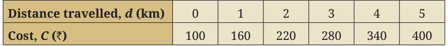
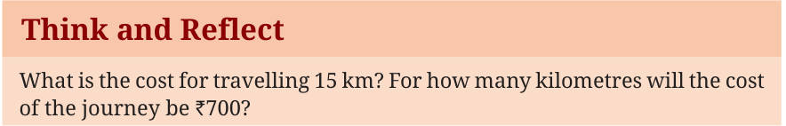
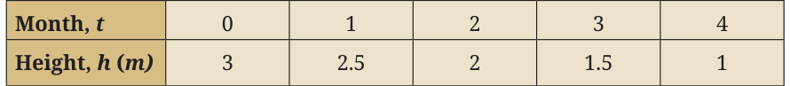
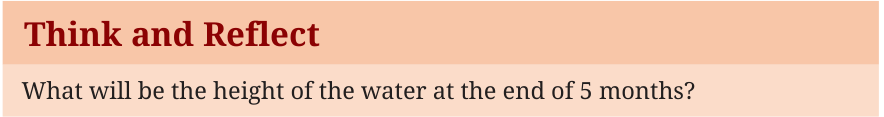

Linear expressions help to model situations or phenomena where there is growth or decline. Consider the following examples:
Example 9: The cost of a journey is given by the linear function \(C(d) = 100 + 60d\), where \(C\) indicates total cost in rupees and \(d\) the distance travelled in km. Let us make a table of values for \(d\) varying from 0 to 10 km and show how the cost increases for every km.

In this example, as the value of \(d\) increases by one km, the value of the cost function \(C\), increases by a fixed amount of ₹60. This is an example of linear growth.
Think and Reflect
What is the cost for travelling 15 km? For how many kilometres will the cost of the journey be ₹700?

Example 10: The height of water in a cylindrical tank is 3 m at the start of summer. The height \(h\) m at the end of \(t\) months is given by the linear function \(h(t) = 3 - 0.5t\).

In the example above, as the value of \(t\) increases by a fixed number (one month), the value of the height \(h\) decreases by a fixed number (0.5). Therefore, this example represents linear decay.
Think and Reflect
What will be the height of the water at the end of 5 months?

Linear growth describes a linear pattern where a quantity increases by a constant amount over equal intervals. Similarly, linear decay describes a linear pattern where a quantity decreases by a constant amount over equal intervals.